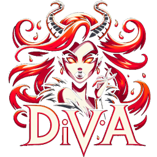

Diablo Accessories
Elevate your Diablo experience with real-time statistics on Gold, Experience, and Speed Leveling! Designed for true enthusiasts, dIVa helps
you discover the most resource-efficient quests, dungeons, and playstyles. Enjoy in-game overlays with up-to-the-minute updates, ensuring
you maximize your efficiency while slaying demons. Gear up and conquer Sanctuary with dIVa!